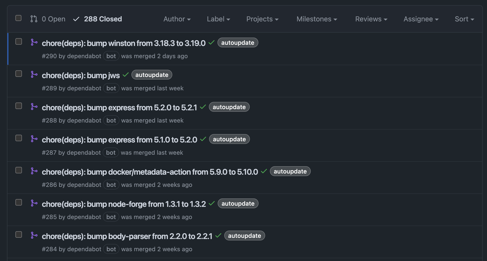

If a human operator needs to touch your system during normal operations, you have a bug. The definition of normal changes as your systems grow.
— Carla Geisser, Google SRE
Dockerfile
FROM node:25-alpine
WORKDIR /app
COPY ./ /app
RUN npm ci
CMD ["npm", "run", "start"]
$ docker build -t my-app .
$ docker run -p 3000:3000 my-app
docker-compose.yml
services:
db:
image: postgres:17.7-alpine
restart: unless-stopped
environment:
- POSTGRES_USER=${TTRSS_DB_USER}
- POSTGRES_PASSWORD=${TTRSS_DB_PASS}
volumes:
- db:/var/lib/postgresql/data
app:
image: cthulhoo/ttrss-fpm-pgsql-static:latest
restart: unless-stopped
volumes:
- app:/var/www/html
depends_on:
- db
environment:
- TTRSS_DB_USER=${TTRSS_DB_USER}
- TTRSS_DB_PASS=${TTRSS_DB_PASS}
volumes:
db:
app:
$ docker-compose up
/.github/workflows/build.yml
name: Build and test
on:
- push
jobs:
build:
runs-on: ubuntu-latest
strategy:
matrix:
node: ['lts/*', 'latest']
steps:
- name: Checkout repository
uses: actions/checkout@v6
- name: Set up Node.js ${{ matrix.node }}
uses: actions/setup-node@v6
with:
node-version: ${{ matrix.node }}
- name: Install dependencies
run: npm ci
- name: Build the project
run: npm run build
- name: Run the tests
run: npm test -- --coverage
/renovate.json
{
"$schema": "https://docs.renovatebot.com/renovate-schema.json",
"extends": [
"config:recommended"
]
}
$ npx renovate
artifactory, aws-eks-addon, aws-machine-image, aws-rds, azure-bicep-resource, azure-pipelines-tasks, azure-tags, bazel, bitbucket-server-tags, bitbucket-tags, bitrise, buildpacks-registry, cdnjs, clojure, conan, conda, cpan, crate, custom, dart, dart-version, deb, deno, devbox, docker, dotnet-version, endoflife-date, flutter-version, forgejo-releases, forgejo-tags, galaxy, galaxy-collection, git-refs, git-tags, gitea-releases, gitea-tags, github-release-attachments, github-releases, github-runners, github-tags, gitlab-packages, gitlab-releases, gitlab-tags, glasskube-packages, go, golang-version, gradle-version, hackage, helm, hermit, hex, hexpm-bob, java-version, jenkins-plugins, jsr, kubernetes-api, maven, nextcloud, node-version, npm, nuget, orb, packagist, pod, puppet-forge, pypi, python-version, repology, rpm, ruby-version, rubygems, sbt-package, sbt-plugin, terraform-module, terraform-provider, typst, unity3d, unity3d-packages
If you're feeling bold...
Declarative programming, rather than imperative
Describe what you want to have, not how you get there
FROM node:25-alpine
WORKDIR /app
COPY ./ /app
RUN npm ci
CMD ["npm", "run", "start"]
services:
db:
image: postgres:17.7-alpine
restart: unless-stopped
environment:
- POSTGRES_USER=${TTRSS_DB_USER}
- POSTGRES_PASSWORD=${TTRSS_DB_PASS}
volumes:
- db:/var/lib/postgresql/data
$api = new KASApi($username, $password);
$subdomains = $api->getSubdomains();
$domainId = null;
foreach ($subdomains as $subdomain) {
if ($subdomain->name === 'presentation') {
$domainId = $subdomain->id;
break;
}
}
if ($domainId === null) {
$api->createSubdomain('presentation', 'A', '88.99.215.101');
exit 0;
}
if ($subdomain->type === 'A' && $subdomain->target === '88.99.215.101') {
exit 0;
}
$api->upsertSubdomain($domainId, 'presentation', 'A', '88.99.215.101');
resource "allinkl_dns" "subdomain" {
zone_host = "mahn.ke"
record_type = "A"
record_name = "presentation"
record_data = "88.99.215.101"
}
$ terraform plan
$ terraform plan
allinkl_dns.subdomain: Refreshing state...
Terraform used the selected providers to generate the following execution
plan. Resource actions are indicated with the following symbols:
~ update in-place
Terraform will perform the following actions:
# allinkl_dns.subdomain will be updated in-place
~ resource "allinkl_dns" "subdomain" {
~ last_updated = "Friday, 05-Dec-25 04:02:04 UTC" -> (known after apply)
~ record_data = "1.2.3.4" -> "88.99.215.101"
# (5 unchanged attributes hidden)
}
Plan: 0 to add, 1 to change, 0 to destroy.
Remember Terraform? Imagine this for every tool you need.
{ pkgs ? import <nixpkgs> {} }:
pkgs.mkShell {
buildInputs = [
vscode-with-extensions = pkgs.vscode-with-extensions.override {
vscodeExtensions = with pkgs.vscode-extensions; [
ms-vscode.ms-vscode.vscode-typescript-next
esbenp.prettier-vscode
];
}
pkgs.nodejs_22
];
}
$ nix-shell
$ nixos-generate --format iso --configuration ./myimage.nix -o result
👀
vincent@mahn.ke
thank you.
{kind=link}
{kind=link}
{kind=link}
{kind=link}
{kind=link}
{kind=link}
{kind=link}
{kind=link}
{kind=link}
{kind=link}
{kind=link}
{kind=link}